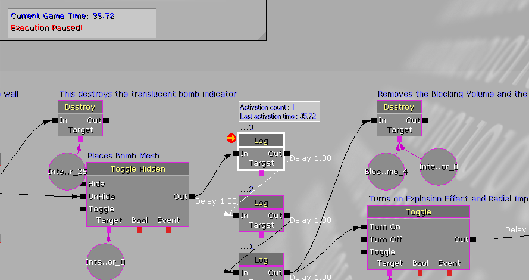
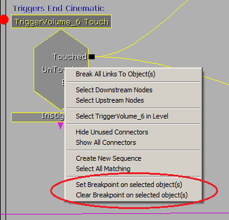
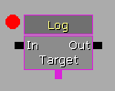
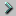

UDN
Search public documentation:
KismetVisualDebuggerCH
English Translation
日本語訳
한국어
Interested in the Unreal Engine?
Visit the Unreal Technology site.
Looking for jobs and company info?
Check out the Epic games site.
Questions about support via UDN?
Contact the UDN Staff
日本語訳
한국어
Interested in the Unreal Engine?
Visit the Unreal Technology site.
Looking for jobs and company info?
Check out the Epic games site.
Questions about support via UDN?
Contact the UDN Staff
UE3主页 >Kismet可视化脚本 > Kismet可视化调试器用户指南
Kismet可视化调试器用户指南
概述
Kismet 可视化调试器窗口
 来启用或禁用实时Kismet调试功能。
然而，当激活 Play In Editor(在编辑器中播放)功能时不能启用或其用实时调试功能。
当启用了实时调试时，如果使用了 Play In Editor(在编辑器播放)功能，那么当前打开的任何Kismet窗口将会切换到"调试器"模式。当结束Play In Editor (在编辑器中播放)功能时，Kismet窗口将会恢复为它们的正常状态。
如果在激活Play In Editor(在编辑器中播放)功能的过程中关闭了Kismet窗口，那么可以通过点击编辑器的主工具条上的Kismet按钮
来启用或禁用实时Kismet调试功能。
然而，当激活 Play In Editor(在编辑器中播放)功能时不能启用或其用实时调试功能。
当启用了实时调试时，如果使用了 Play In Editor(在编辑器播放)功能，那么当前打开的任何Kismet窗口将会切换到"调试器"模式。当结束Play In Editor (在编辑器中播放)功能时，Kismet窗口将会恢复为它们的正常状态。
如果在激活Play In Editor(在编辑器中播放)功能的过程中关闭了Kismet窗口，那么可以通过点击编辑器的主工具条上的Kismet按钮  来重新打开Kismet窗口。
来重新打开Kismet窗口。

图表面板的左上角的信息框包含了游戏的当前运行时状态，并且当游戏暂停时将会出现"Execution Paused(执行暂停)!"通知。 激活的链接呈现为白色，激活的序列对象有白色的边界，并且在其上面由一个信息框，显示了它们被激活的次数，及上次激活该对象的时间。 对象的左上角的橘黄色箭头指出了当前的当前正在暂停于Kismet窗口中的哪个对象上。断点

如果选中的多个序列对象，那么将会从每个选中的对象上添加或删除断点。 具有断点的序列对象在对象的左上角将有一个红色的圆圈。
也可以在左击某个序列对象的同时按下Alt键来切换断点的打开和关闭状态。 还有一个工具条按钮 用于清除编辑器中当前打开的所有关卡中的所有断点。
无论Kismet窗口是否处于调试模式中，都可从序列对象添加或删除断点。
假设启用了实时调试，当激活了 Play In Editor(在编辑器中播放)功能的过程中激活了带有断点的序列对象时，游戏的执行将会暂停，并且如果还没有启用调试模式，那么将会在调试模式下打开Kismet窗口，序列对象将会居中显示在Kismet窗口图表面板内。
用于清除编辑器中当前打开的所有关卡中的所有断点。
无论Kismet窗口是否处于调试模式中，都可从序列对象添加或删除断点。
假设启用了实时调试，当激活了 Play In Editor(在编辑器中播放)功能的过程中激活了带有断点的序列对象时，游戏的执行将会暂停，并且如果还没有启用调试模式，那么将会在调试模式下打开Kismet窗口，序列对象将会居中显示在Kismet窗口图表面板内。
工具条按钮
| 图标 | 描述 |
|---|---|
 | Pause(暂停) – 暂停执行游戏 (Alt+F7) |
 | Continue(继续) – 继续执行游戏 (Alt+F8) |
|  | 运行到下一个动作 – 运行游戏直到遇到下一个序列对象... 请参照以下详细信息 (Alt+F10) |
 | Step through(单步调试) – 将游戏时间增加一个单位的游戏时间/tick（更新时间） (Alt+F9) |
Run To Next(运行到下一步)按钮具有三个不同的行为，通过右击按钮可以访问这三个行为。
 "Any(任何一个)" 就是指它将运行到下一个激活的序列对象。"Downstream(下游对象)" 意味着它将运行到当前所处暂停位置的对象的直接下游的下一个激活的序列对象。 "Selected（选中项）" 意味着它将运行到下一个当前选中的激活的序列对象。
"Any(任何一个)" 就是指它将运行到下一个激活的序列对象。"Downstream(下游对象)" 意味着它将运行到当前所处暂停位置的对象的直接下游的下一个激活的序列对象。 "Selected（选中项）" 意味着它将运行到下一个当前选中的激活的序列对象。
按键快捷方式
在处于调试模式的Kismet窗口中：
| 快捷键 | 描述 |
|---|---|
| Alt+F7 | 暂停 |
| Alt+F8 | 继续 |
| Alt+F9 | 逐步调试 |
| Alt+F10 | 运行到下一个动作 |
在Play In Editor(在编辑器中播放)窗口中：
| 快捷键 | 描述 |
|---|---|
| Shift+F1 | 切换鼠标光标是否锁定在Play In Editor(在编辑器中播放)窗口上。 |
| Alt+F7 | 暂停 |